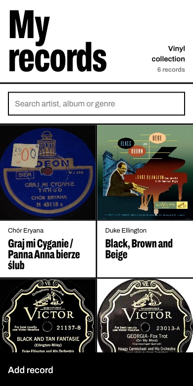
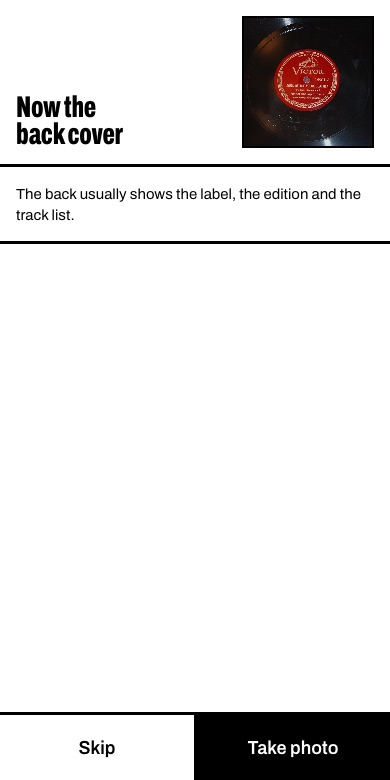
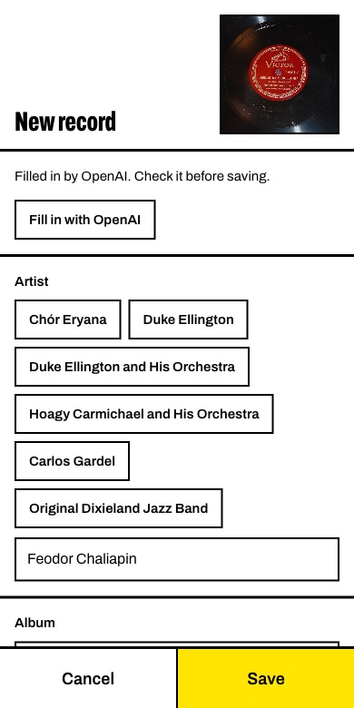
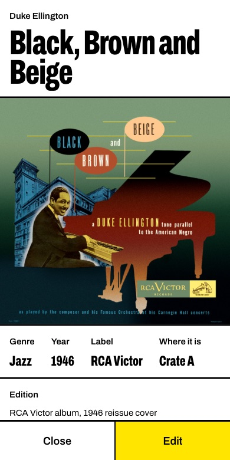
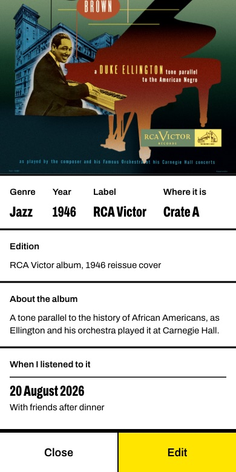
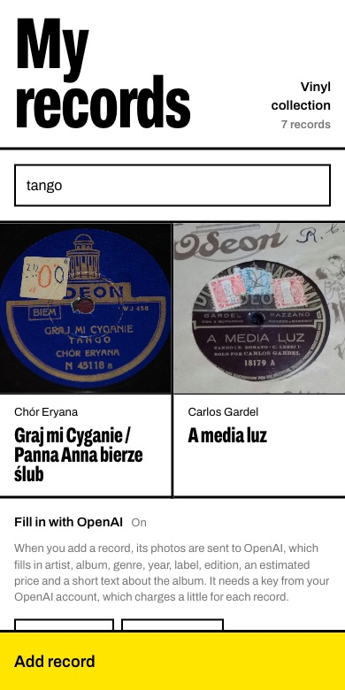

My records
A phone app for my vinyl collection. I photograph the front and back of a record, and OpenAI fills in the artist, album, year, label, edition and a short text about it. Then I note where it is on the shelf and when I listened to it.
Sample records, runs in your browser, nothing is saved. OpenAI's answers in the demo are pre-recorded.
The journey






Design
It shares its look with WAMC: black ink on white paper, heavy rules, one condensed typeface, and yellow only for what needs attention. Here the cover is the picture and the album title is the poster. Buttons are big enough for one hand, and the artists, genres and shelves already used come back as one-tap buttons.
Scope
One person, one collection, on the phone's web browser. It keeps up to 5,000 records, each with up to 500 listens. OpenAI is optional: without a key, everything is typed by hand. It does not stream music, track prices over time or connect to a marketplace.
How it is built
- The pageOne HTML file with plain JavaScript: no framework and no build step. The front photo is shrunk on the phone; the back keeps more pixels so its small print stays readable.
- The serverOne PHP file on ordinary shared hosting.
- The AIThe server sends both photos to OpenAI's gpt-5-mini and asks for a fixed JSON shape, so every answer fits the form. It also sends the genres already in the collection, so new records reuse them. The OpenAI key stays on the server and never reaches the phone.
- The dataNo database. The list is a JSON file, written under a file lock so two saves cannot collide. Photos sit in a folder the web cannot open, and only a signed-in phone gets them.
- The lockOne password, stored hashed. Five wrong tries lock the app for 15 minutes, and a sign-in lasts 90 days.
- The demoThe same page with the server swapped for a pretend one inside the page. OpenAI is not called: each sample record has its answer recorded in advance.
Photo credits
The sample records in the demo are photos from Wikimedia Commons of records from 1915 to 1946.
- At the Jazz Band Ball, Victor 18457, public domain
- A media luz, Odeón 18179, public domain
- Georgia on My Mind, Victor 23013, public domain
- Black and Tan Fantasie, Victor 21137, TuttiFrutti1955, CC0
- Black, Brown and Beige, RCA Victor cover, public domain
- Chór Eryana, Odeon N 45118 a, public domain
- Chór Eryana, Odeon N 45118 b, public domain
- Chaliapin, Victor 14901 A, public domain
- Chaliapin, Victor 14901 B, public domain
- Nancy, Columbia 36868, public domain
- Lapitino, Victor 17929 A, public domain
- Lapitino, Victor 17929 B, public domain